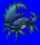
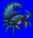
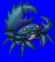
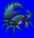

Height: 3 millimeters - 3 meters Weight: < 1lb - several lbs.
Habitat: Shore Origin: ???
Meaning: English word "cancer"
A crab-like crustacean. Shown above is a Japanese variety of crab. It has legs both for attacking and for walking and a hard shell. Normally, in males, the body is small while the scissors are large, while in females, the body is large while the scissors are small. Some of the largest such crabs can reach three meters long, with over two of that being scissors for attacking!